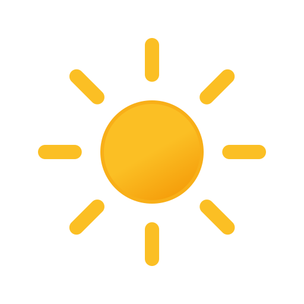
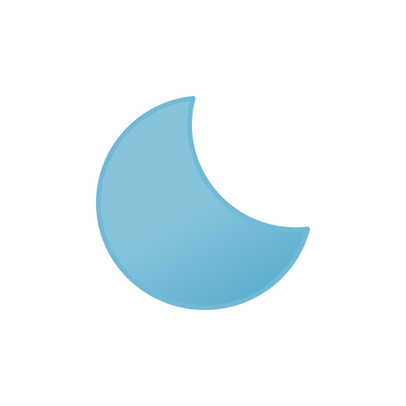

Weather art — condition set (Meteocons + CSS moods)
The decision: Meteocons static fill SVGs (MIT license, by Bas
Milius) vendored locally as condition glyphs, on top of purpose-built
CSS-gradient backdrops keyed to condition + day/night. This replaces
the CSS-only blob stand-ins (the .wx-sun/.wx-cloud
divs) in notch-states.html — the gradients stay, they
carry the atmosphere; the glyph now reads the condition at a glance.
Card shape is the locked .below-block weather block:
320px, black base, 14px bottom rounding, scrim + condition/temp row.
Day
Backdrops keyed to daytime — deep teals and slate blues, never bright. Glyph sits top-right, 48px, soft drop shadow.




Night
Same conditions after sundown — indigo/near-black variants of the day moods. Day/night is keyed off location time, which the app already has.

Severe / other
Alert-tier conditions — these are also the ones the weather poller edge-triggers on (rain incoming, thresholds), so the card may surface unprompted.



Idle-hover peek: this same art as a backdrop layer, behind the media row
2026-07-23 truth-sync addition. Plan 105 (Step B) split the idle
hover-peek's weather scene into two independent layers so the mood
art survives even when something else outranks the plain weather
readout: the .wx-card/.wx-icon art above
now also paints as a position:absolute; inset:0; z-index:0
backdrop (IdleHoverPeek.tsx's WeatherPeekBackdrop),
with the peek's real content — a live-match scorecard, a now-playing
media row (plan 104), the plain weather readout, or just the
day-progress timeline — sitting above it at z-index:1
(precedence: football > media > weather > timeline). The
backdrop only shows while weather data exists and no live match is
running; media, when present, still gets to sit in front of it
rather than replacing it.
Without media or a live match, the same backdrop instead sits
behind the plain weather readout (.wx-peek-readout —
temp + a .chip condition label, plan 092's chip
convergence; not a bespoke pill).